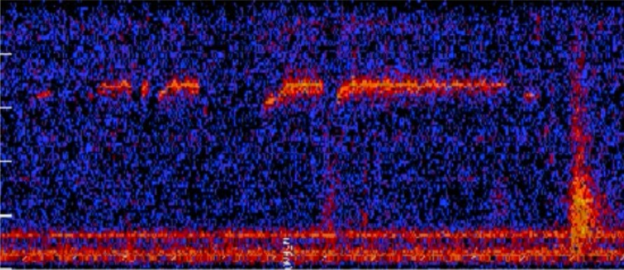
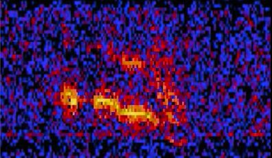

The Mysterious Sounds from Below
Below are some of the examples from instances where hydrophones picked up on unfimilar sounds underwater.
The 52-Hertz Whale

The 52-Hertz Whale, also known as 52 Blue, is an individual whale of unidentified species that calls at an unusual frequency of 52 hertz. The pitch is at a significantly higher frequency than other whale species with similar migration patterns. It's call has been detected frequently in many locations since the late 1980s, and only appears to be an individual. However, this whale has never been spotted, only heard via hydrophones. Some describe it as the "World's lonliest whale," though recordings of a second whale emitting at the same frequency has been heard elsewhere, at the same time, sporadically since 2010.
The Train
The Train is a sound recording from the Equatorial Pacific Ocean autonomous hydrophone array on March 5, 1997. Since May of 1996, a large array of hydrophones have been continuously deployed in the eastern Equatorial Pacific to provide the U.S Navy with data for research purposes. The sound resembling that of a train horn, many question as to what the origin of such a strange noise could be. The NOAA, National Oceanic and Atmospheric Administration, believes the origin to be most likely a large iceberg grounded in the Ross Sea, near Cape Adare. Although, not everyone is satisfied with such an answer.
Julia
Julia was recorded on March 1, 1999 by the U.S NOAA. Again, NOAA claims the source to be most likely a large iceberg that had run aground off Anartica. The sound was loud enough to be heard over the entire Equatorial Pacific Ocean autonomous hydrophone array with it lasting for 2 minutes and 43 seconds. Despite this, NOAA was unable to pin-point where the sound was coming from only narrowing it to between Bransfield Straits and Cape Afare. There are many who believe this to be the call of an undiscovered species, as humanity has still yet to discover much of our oceans. For now, however, these sounds remain a mystery and scientist can only guess as to what the origin is.
NOAA Information

From the NOAA Offical Page, "NOAA is an agency that enriches life through science. Our reach goes from the surface of the sun to the depths of the ocean floor as we work to keep the public informed of the changing environment around them."
NOAA Hydrophone Information

According to Britannica, "Sonar, (from “sound navigation ranging”), is a technique for detecting and determining the distance and direction of underwater objects by acoustic means."
EXTRA EXTRA!!

Scientist have only explored 5% of the ocean; meaning there's so much more to discover! Together, let's dive deeper into some more interesting facts about the waters and the creatures living in them. On our Extra page you'll find fun facts about the oceans strangest little creatures, and how these waters can be dangerous.
Extra